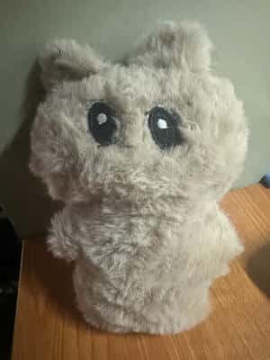
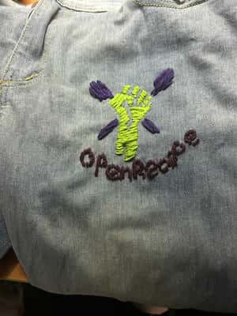

<!DOCTYPE html>
<html lang="zh">
<head>
  <meta charset="UTF-8" />
  <meta name="viewport" content="width=device-width, initial-scale=1.0" />
  <title>OpenPlush 开源缝纫日记</title>
  <link href="https://cdn.jsdelivr.net/gh/ayaka14732/souce-han-hand/source-han-hand.css" rel="stylesheet">
  <link href="https://fonts.googleapis.com/css2?family=Indie+Flower&display=swap" rel="stylesheet">
  <script src="https://cdn.jsdelivr.net/npm/page-flip@2.0.7/dist/js/page-flip.browser.min.js"></script>

  <style>
    body {
      margin: 0;
      height: 100vh;
      display: flex;
      justify-content: center;
      align-items: center;
      background: radial-gradient(#ffe9ec, #a6917a);
      font-family: 'Source Han Hand', 'Indie Flower', 'KaiTi', cursive;
      overflow: hidden;
    }

    #book {
      width: 900px;
      height: 600px;
      box-shadow: 0 0 40px rgba(0, 0, 0, 0.5);
      border-radius: 5px;
      background: #0c0200 url('images/2.jpg');
    }

    .page {
      background: #fffbf2 url('images/0.jpg');
      background-size: cover;
      padding: 40px;
      color: #3b2f2f;
      font-size: 20px;
      line-height: 1.8;
      box-sizing: border-box;
      border-radius: 4px;
      overflow: hidden;
      box-shadow: inset -8px 0 40px rgba(0, 0, 0, 0.25);
    }

    .cover {
      background: #f4bb36 url('images/1.jpg');
      color: #380606;
      display: flex;
      flex-direction: column;
      justify-content: center;
      align-items: center;
      font-size: 32px;
      letter-spacing: 2px;
      box-shadow: inset 8px 0 40px rgba(0, 0, 0, 0.4);
    }

    .cover h1 {
      margin: 0;
      font-size: 48px;
    }

    .cover p {
      margin-top: 10px;
      font-size: 20px;
    }

    @media (max-width: 900px) {
      #book {
        width: 95%;
        height: 500px;
      }
    }

    .diary-img {
      max-height: 300px;
      object-fit: contain;
      display: block;
      margin: 20px auto;
      border-radius: 12px;
      box-shadow: 0 4px 14px rgba(0,0,0,0.3);
    }
  </style>
</head>

<body>
  <div id="book"></div>

  <script>
    const bookEl = document.getElementById("book");
    const MAX_CHARS_PER_PAGE = 650;

    const makePage = (html, cls = "page") => {
      const el = document.createElement("div");
      el.className = cls;
      el.innerHTML = html;
      return el;
    };

    const autoSplitPages = (title, text) => {
      const pages = [];
      const chunks = [];
      for (let i = 0; i < text.length; i += MAX_CHARS_PER_PAGE) {
        chunks.push(text.slice(i, i + MAX_CHARS_PER_PAGE));
      }
      chunks.forEach(chunk => {
        pages.push(makePage(`<p>${chunk}</p>`));
      });
      return pages;
    };

    const pageFlip = new St.PageFlip(bookEl, {
      width: 420,
      height: 600,
      showCover: true,
      drawShadow: true,
      flippingTime: 1000,
      useMouseEvents: true,
      showPageCorners: true,
      mobileScrollSupport: true,
      maxShadowOpacity: 0.4,
    });

    const chapters = [
      {
        text: `2025年11月28日的第一只小熊 ，那是平凡的一天，却因为你的出现，变得不再普通。
`
      },
      {
        text: `是一个很丑的小熊哈哈哈`
      },
      {
        title: "尝试刺绣图案 2025-12-06",
        text: `在牛仔裤上用粗线缝纫图案。
`
      }
    ];

    const pages = [
      makePage(`<h1>OpenPlush 开源缝纫</h1><p>记录日常</p>`, "page cover"),
      ...chapters.flatMap(ch => autoSplitPages(ch.title, ch.text)),
      makePage(`<p>—— 爱在每一页之间延伸 ——</p>`, "page cover")
    ];

    pageFlip.loadFromHTML(pages);
  </script>

</body>
</html>
